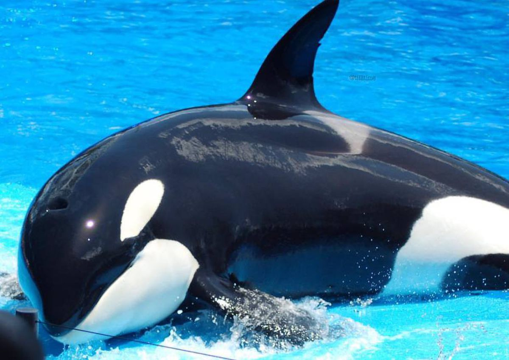

La ballena azul (Balaenoptera musculus), también conocida como rorcual azul, es una especie de cetáceo misticeto de la familia Balaenopteridae. Su tamaño medio es de entre 24 y 27 metros de longitud y pesan entre 100 y 120 toneladas, aunque hay registros de ejemplares de más de 30 m de longitud y 170 t de peso, que lo convierten en el mayor animal del planeta Tierra, no solo en la actualidad sino también el mayor del que se tenga registro en la historia de la vida en la Tierra.
Largo y estilizado, el cuerpo de este mamífero marino es de color gris azulado a lo largo del dorso y algo más claro en la zona ventral. Existen al menos tres subespecies distintas: B. m. musculus, del Atlántico norte y Pacífico norte; B. m. intermedia, del océano Antártico y B. m. brevicauda (también conocida como ballena azul pigmea), que se encuentra en el Índico y en el Pacífico sur. Existen dudas sobre la validez de una cuarta subespecie, B. m. indica, que también se encuentra en el océano Índico. Como otras ballenas barbadas, su dieta consiste principalmente en pequeños crustáceos conocidos como kril.
Las ballenas azules eran abundantes en casi todos los océanos hasta comienzos del siglo XX. Durante más de cuarenta años fueron cazadas hasta casi su extinción, lo que incentivó su protección por parte de la comunidad internacional en 1966. Un informe de 2002 estimó su número entre 5000 y 12 000 ejemplares en todo el mundo, localizados en al menos cinco grupos,32 aunque una investigación más reciente sobre la subespecie pigmea sugiere que estos datos pueden ser una subestimación.
Antes del comienzo de la caza comercial de ballenas, la población más numerosa era la de la Antártida, con alrededor de 239 000 ejemplares (entre 202 000 y 311 000). Actualmente solo quedan concentraciones mucho menores (de alrededor de 2000 individuos) en los océanos Pacífico nororiental, Antártico e Índico. Hay dos grupos más en el Atlántico norte y por lo menos dos en el hemisferio sur.
Aunque suele llamarse a todos los misticetos «ballenas», hay quienes reservan esta denominación para la familia Balaenidae y llaman «rorcuales» a las especies de la familia Balaenopteridae, una familia que incluye, además de la ballena azul, la yubarta, el rorcual común, el rorcual de Bryde, el rorcual boreal, el rorcual aliblanco, el rorcual austral, el rorcual tropical y el rorcual de Omura.
|  |
|
|
|
|
|